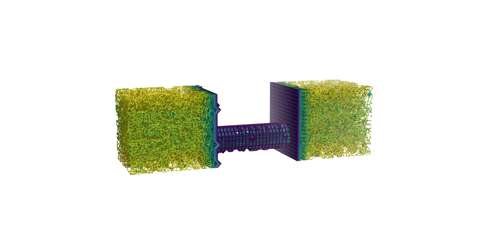
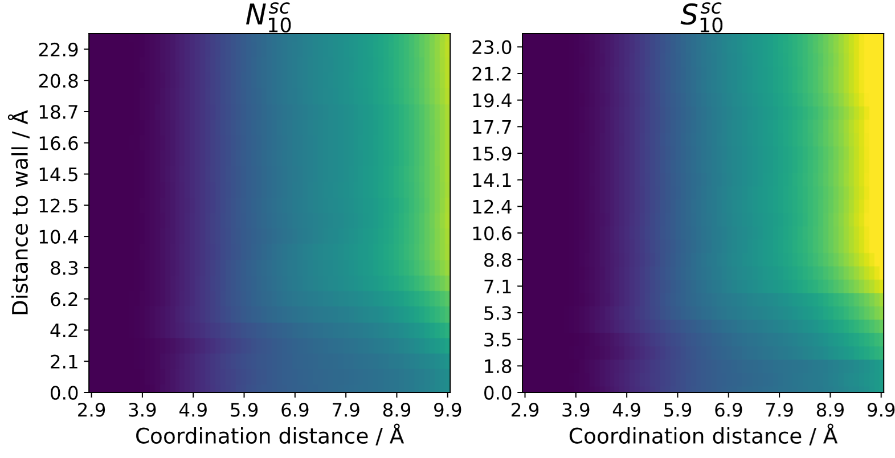
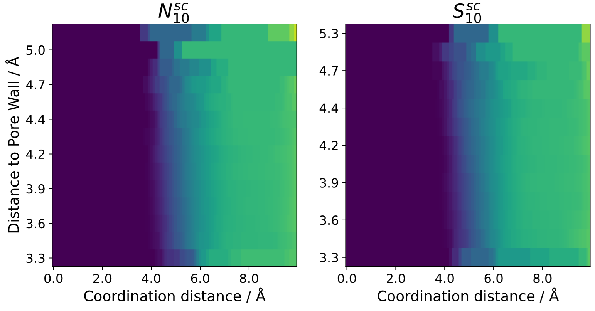

Coordination number analysis
This analysis calculates the coordination number by calculating by simple counting of neighbors. The result is identical to an rdf integral.
3D coordination number
The result of the analysis can be performed on a user-defined grid and printed as a gaussian cube file. Each 3D-bin will contain the coordination number up to the specified coordination distance. The output is split into different cube files for each species pair (not including species identified or defined as structures). The cube files can be visualized to get a 3d map of the coordination number (by using e.g. VMD, PyMol etc.). This can be helpfule to recognize regions of interest in highly anisotropic systems:
{kind=link}
distance-dependence to structures
If no 3D-analysis is conducted, the coordination number can be calculated relative to structures. For any kind of structure, a 2D-heatmap can be generated where one axis contains the coordination distance and the other axis contains the distance to a reference structure. This can be utilized to see trends in transition regions going from surfaces to bulk liquid. Here is an example comparing a neat ionic liquid at a carbon surface to a system with added salt [1]:
{kind=link}
If the system contains a porous material (e.g. nanopore) the coordination number can also be calculated inside of the pores relative to the inner pore walls:
{kind=link}
Note that this either needs really large pores or long simulation times to yield sufficient sampling, as there are usually not many atoms present inside of nanopores when compares to bulk liquid.
Note
example pictures taken from ref [1] [1].